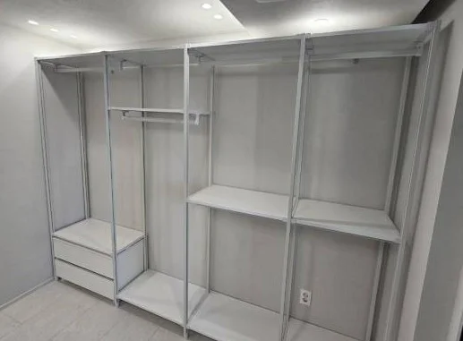

New Home
새 아파트·신혼집
드레스룸 제작
이삿짐보다 드레스룸이 먼저 들어가면, 짐 정리가 하루 만에 끝납니다.
새 아파트는 아직 짐이 없어서 벽 끝까지 정확하게 실측할 수 있고, 설치도 걸리는 것 없이 진행됩니다. 입주 전에 드레스룸을 완성해 두면 이삿날 옷 상자를 바로 풀어 걸 수 있어 짐 정리가 훨씬 빨라집니다.
신혼집은 두 사람의 옷이 합쳐져 생각보다 양이 많습니다. 긴 옷은 높은 행거 구간에, 셔츠와 니트는 2단 행거로 나눠 걸면 같은 면적에서 수납량을 크게 늘릴 수 있습니다. 두 분의 옷 구성을 함께 여쭤보고 구역을 나눕니다.

Situations
입주 준비 중이라면 이렇게 맞춰 드립니다
입주 전 빈 집일 때
짐 없는 상태에서 실측과 설치를 해 정확하고 빠릅니다.
사전점검 때 치수를 재셨을 때
재 둔 치수와 사진을 보내주시면 대략 구성을 먼저 잡습니다.
두 사람 옷을 합칠 때
각자 구역을 나누고 긴 옷·짧은 옷 구간을 따로 잡습니다.
이사 날짜가 정해졌을 때
이삿날 전에 설치가 끝나도록 일정을 역순으로 맞춥니다.
Checklist
입주 일정에 맞추려면 알려주세요
| 알려주실 것 | 예시 | 필요한 이유 |
|---|---|---|
| 입주 가능일 | 잔금·열쇠 받는 날 | 실측과 설치 가능한 날을 정합니다 |
| 이삿날 | 짐 들어오는 날 | 그 전에 설치를 마치도록 맞춥니다 |
| 도면·치수 | 드레스룸 평면, 사전점검 때 잰 치수 | 대략 구성을 미리 잡습니다 |
| 옷 구성 | 두 분의 긴 옷, 짧은 옷, 접는 옷 양 | 행거와 선반 비율을 정합니다 |
| 출입 | 관리사무소 공사 신고, 엘리베이터 사용 | 설치 당일 동선을 준비합니다 |
Process
입주 전 드레스룸 완성 순서
문자 상담
입주일, 이삿날, 드레스룸 사진이나 도면을 보내주세요.
입주 전 실측
빈 방에서 벽·천장 치수와 콘센트 위치를 잽니다.
설계·견적
옷 구성에 맞춘 배치와 정확한 견적을 드립니다.
제작
이삿날에 맞춰 제작 일정을 잡습니다.
이사 전 설치
짐 들어오기 전에 설치와 점검을 마칩니다.
Related
함께 보면 좋은 안내
FAQ
자주 묻는 질문
입주 전에 실측하러 와 주실 수 있나요?
네. 집에 들어갈 수 있는 날짜를 알려주시면 실측 일정을 맞춰 드립니다.
이삿날까지 시간이 촉박해요.
입주일과 이삿날을 알려주시면 가능한 일정을 먼저 확인해 안내해 드립니다.
예전 집 행거를 새 집에 옮기고 부족한 부분만 만들 수 있나요?
네. 기존 행거 이전설치와 부족한 부분 제작을 함께 진행할 수 있습니다.
관리사무소 신고가 필요한가요?
단지마다 다르니 관리사무소에 미리 확인해 주세요. 설치 당일 필요한 내용이 있으면 함께 안내해 드립니다.
견적은 어떻게 받나요?
도면이나 사진으로 대략 안내 후, 실측을 마친 뒤 정확한 견적을 드립니다.